Candidate List 20260520 Previous Day Next Day Section 1: New Sources (age<1d) Cosmological Afterglow
Section 2: Old (1-5d) sources observed last night placeholder
Section 1: New Afterglow/FBOT Cands Last Night (4)
1. ZTF26aaxmsnr (FBOT?) [Back to Top] [Share] [Trigger Swift] [Fritz ] [Lasair ]RA, Dec: 238.81687, 4.90796 15h55m16.05s, 4d54m28.64sGalactic (l, b): 14.42773, 40.9543 ext(g-r) = 0.071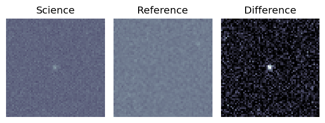
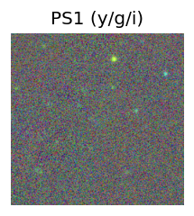
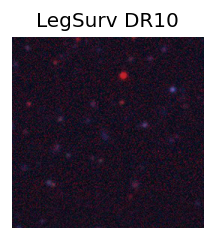
peak abs mag = -22.13 LegacySurvey: 1 sources in 3 arcsec Closest: d = 1.82 arcsec, 142.4 deg (east of north) photoz=0.66 (68% bounds 0.15, 1.25), type=EXP peak abs mag = -23.16 (68% bounds -19.49, -24.86) 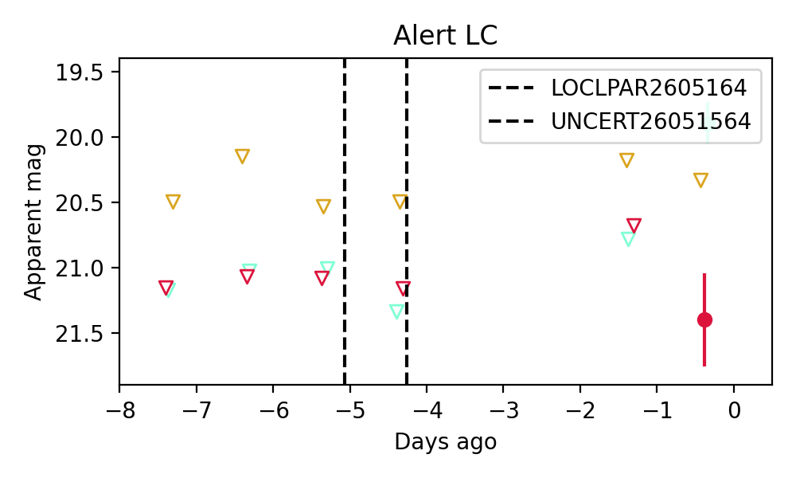
2. ZTF26aaxnlpg (Afterglow?) [Back to Top] [Share] [Trigger Swift] [Fritz ] [Lasair ]RA, Dec: 284.42756, 13.01588 18h57m42.61s, 13d 0m57.18sGalactic (l, b): 45.24583, 4.52928 ext(g-r) = 0.873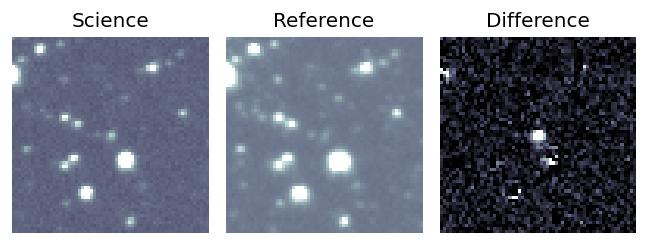
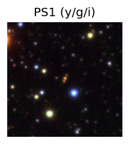
PS1: 1 source in 3 arcsec Closest: d = 0.08 arcsec photoz=0.71+/-0.01 peak abs mag = -26.75 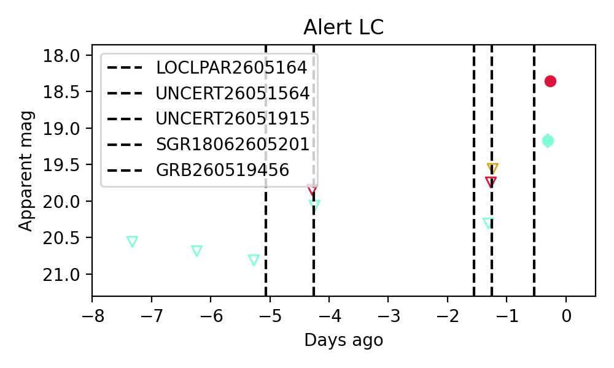
Consistent with synchrotron, g-r>0!
3. ZTF26aaxnqel (Afterglow?) [Back to Top] [Share] [Trigger Swift] [Fritz ] [Lasair ]RA, Dec: 299.81977, 37.76629 19h59m16.74s, 37d45m58.65sGalactic (l, b): 73.6249, 4.24561 ext(g-r) = 0.733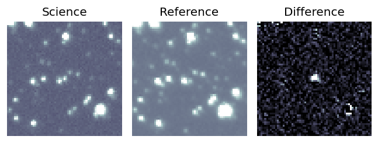
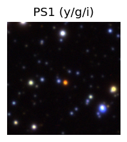
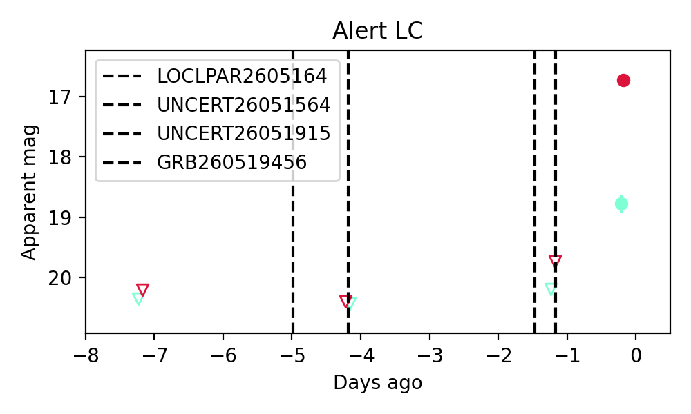
Consistent with synchrotron, g-r>0!
4. ZTF26aaxnsfi (Afterglow?) [Back to Top] [Share] [Trigger Swift] [Fritz ] [Lasair ]RA, Dec: 286.07311, 46.17871 19h 4m17.55s, 46d10m43.35sGalactic (l, b): 76.59666, 17.12444 ext(g-r) = 0.053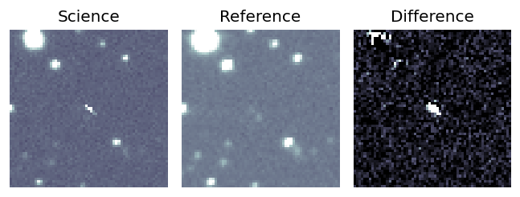
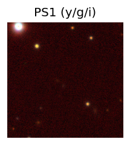
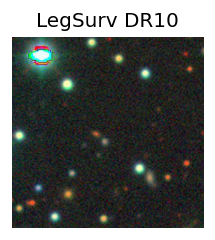
PS1: 1 source in 3 arcsec Closest: d = 3.68 arcsec photoz=0.46+/-0.61 peak abs mag = -23.52 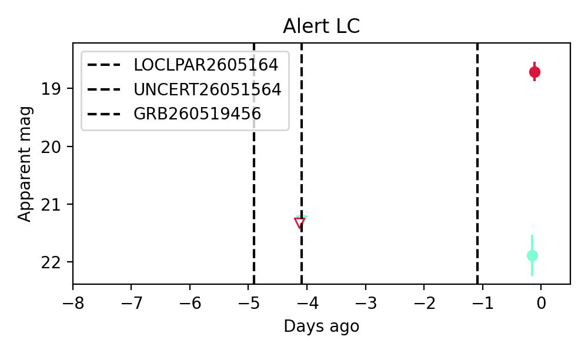
Consistent with synchrotron, g-r>0!
Section 2: Older Sources Observed Last Night (27)
0. ZTF26aawtbkb (Afterglow?) [Back to Top] [Share] [Trigger Swift] [Fritz ] [Lasair ]RA, Dec: 185.84965, 12.94603 12h23m23.92s, 12d56m45.69sGalactic (l, b): 276.7293, 74.37349 ext(g-r) = 0.046peak abs mag = -19.33 LegacySurvey: 1 sources in 3 arcsec Closest: d = 5.07 arcsec, 64.7 deg (east of north) photoz=0.03 (68% bounds 0.03, 0.04), type=SER peak abs mag = -18.49 (68% bounds -18.06, -19.01) Consistent with synchrotron, g-r>0!
1. ZTF26aawtwql (Afterglow?FBOT?) [Back to Top] [Share] [Trigger Swift] [Fritz ] [Lasair ]RA, Dec: 228.87648, -14.50352 15h15m30.35s, -14d-30m-12.68sGalactic (l, b): 347.4001, 35.64233 WARNING: 3.46 deg from ecliptic plane ext(g-r) = 0.141LegacySurvey: 1 sources in 3 arcsec Closest: d = 0.13 arcsec, 239.4 deg (east of north) photoz=0.09 (68% bounds 0.05, 0.21), type=REX peak abs mag = -19.56 (68% bounds -18.26, -21.57) Consistent with synchrotron, g-r>0!
2. ZTF26aawzpcp (FBOT?) [Back to Top] [Share] [Trigger Swift] [Fritz ] [Lasair ]RA, Dec: 185.98626, 21.20115 12h23m56.70s, 21d12m4.12sGalactic (l, b): 254.86014, 81.37497 ext(g-r) = 0.026peak abs mag = -20.92 LegacySurvey: 1 sources in 3 arcsec Closest: d = 0.54 arcsec, 44.3 deg (east of north) photoz=0.19 (68% bounds 0.12, 0.25), type=EXP peak abs mag = -21.04 (68% bounds -19.92, -21.75)
3. ZTF26aawzvtx (FBOT?) [Back to Top] [Share] [Trigger Swift] [Fritz ] [Lasair ]RA, Dec: 213.42251, -3.2812 14h13m41.40s, -3d-16m-52.32sGalactic (l, b): 339.24321, 53.6894 ext(g-r) = 0.063peak abs mag = -20.10 LegacySurvey: 1 sources in 3 arcsec Closest: d = 1.01 arcsec, 211.4 deg (east of north) photoz=0.17 (68% bounds 0.12, 0.2), type=REX peak abs mag = -20.31 (68% bounds -19.51, -20.73)
4. ZTF26aaxbgss (Afterglow?) [Back to Top] [Share] [Trigger Swift] [Fritz ] [Lasair ]RA, Dec: 228.22017, 15.31785 15h12m52.84s, 15d19m4.27sGalactic (l, b): 20.45123, 55.1331 ext(g-r) = 0.028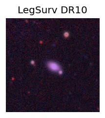
peak abs mag = -18.76 LegacySurvey: 1 sources in 3 arcsec Closest: d = 1.45 arcsec, 216.2 deg (east of north) photoz=0.07 (68% bounds 0.06, 0.08), type=SER peak abs mag = -19.02 (68% bounds -18.72, -19.25) Consistent with synchrotron, g-r>0!
5. ZTF26aaxbiht (FBOT?) [Back to Top] [Share] [Trigger Swift] [Fritz ] [Lasair ]RA, Dec: 223.24903, 27.89602 14h52m59.77s, 27d53m45.66sGalactic (l, b): 41.67629, 63.1054 ext(g-r) = 0.03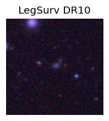
peak abs mag = -19.08 LegacySurvey: 1 sources in 3 arcsec Closest: d = 1.38 arcsec, 303.0 deg (east of north) photoz=0.16 (68% bounds 0.11, 0.19), type=EXP peak abs mag = -19.65 (68% bounds -18.91, -20.16) Consistent with synchrotron, g-r>0!
6. ZTF26aaxdwxv (Afterglow?) [Back to Top] [Share] [Trigger Swift] [Fritz ] [Lasair ]RA, Dec: 268.78435, 3.27144 17h55m8.24s, 3d16m17.18sGalactic (l, b): 29.39103, 14.01101 ext(g-r) = 0.247PS1: 1 source in 3 arcsec Closest: d = 2.83 arcsec photoz=1.02+/-0.14 peak abs mag = -25.02 Consistent with synchrotron, g-r>0!
7. ZTF26aaxgdcm (Afterglow?) [Back to Top] [Share] [Trigger Swift] [Fritz ] [Lasair ]RA, Dec: 171.22508, 47.95036 11h24m54.02s, 47d57m1.29sGalactic (l, b): 156.1579, 63.21415 ext(g-r) = 0.017
8. ZTF26aaxgpag (Afterglow?) [Back to Top] [Share] [Trigger Swift] [Fritz ] [Lasair ]RA, Dec: 177.61778, 47.38967 11h50m28.27s, 47d23m22.82sGalactic (l, b): 149.41973, 66.48112 ext(g-r) = 0.026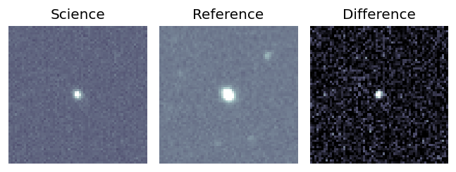
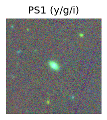
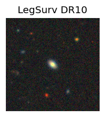
peak abs mag = -18.77 PS1: 1 source in 3 arcsec Closest: d = 0.08 arcsec photoz=0.11+/-0.03 peak abs mag = -19.13 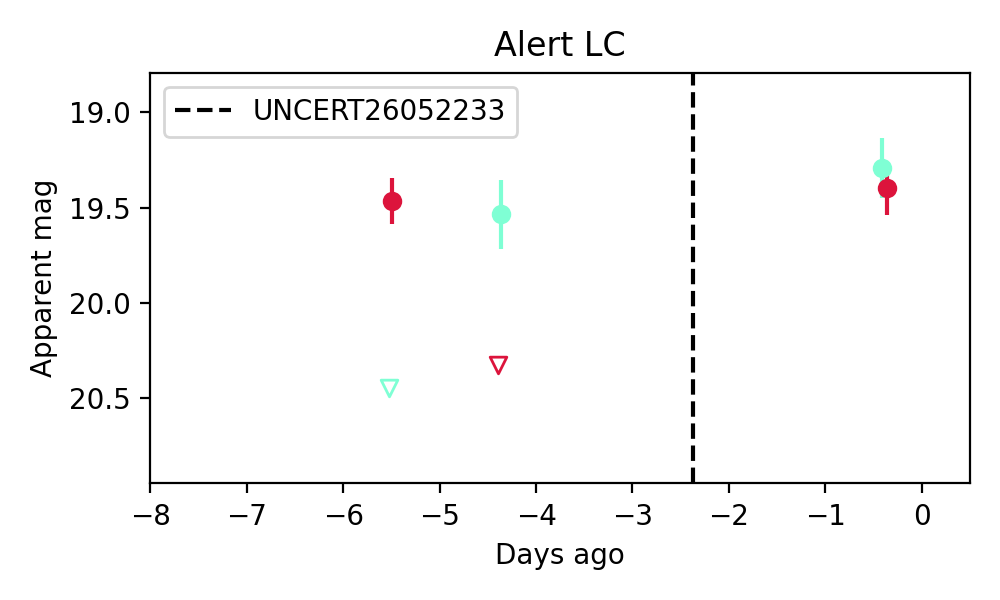
9. ZTF26aaxhwhr (Afterglow?) [Back to Top] [Share] [Trigger Swift] [Fritz ] [Lasair ]RA, Dec: 251.24251, -12.02058 16h44m58.20s, -12d-1m-14.07sGalactic (l, b): 6.21823, 21.1844 ext(g-r) = 0.555 Consistent with synchrotron, g-r>0!
10. ZTF26aaxicie (FBOT?) [Back to Top] [Share] [Trigger Swift] [Fritz ] [Lasair ]RA, Dec: 216.25877, 32.16649 14h25m2.11s, 32d 9m59.37sGalactic (l, b): 52.51032, 69.09575 ext(g-r) = 0.01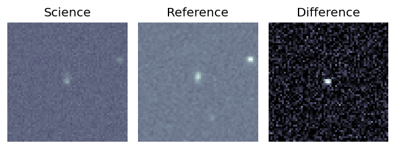
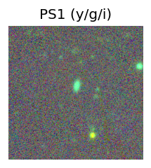
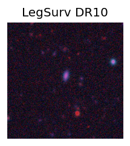
peak abs mag = -19.56 LegacySurvey: 1 sources in 3 arcsec Closest: d = 2.80 arcsec, 351.4 deg (east of north) photoz=0.12 (68% bounds 0.1, 0.14), type=SER peak abs mag = -19.14 (68% bounds -18.71, -19.52) 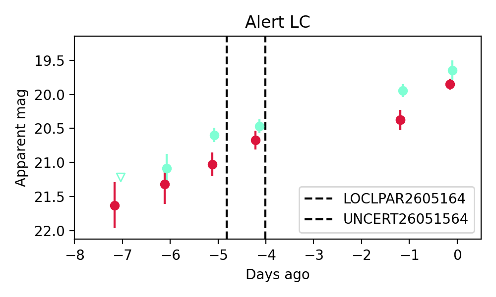
11. ZTF26aaxiuhq (FBOT?) [Back to Top] [Share] [Trigger Swift] [Fritz ] [Lasair ]RA, Dec: 283.49229, 27.19494 18h53m58.15s, 27d11m41.77sGalactic (l, b): 57.7457, 11.51653 ext(g-r) = 0.184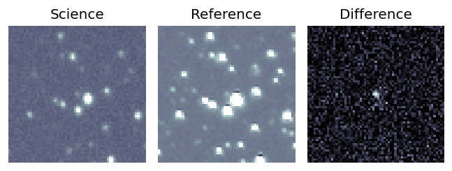
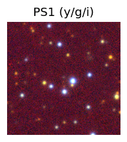
PS1: 1 source in 3 arcsec Closest: d = 0.39 arcsec photoz=0.52+/-0.08 peak abs mag = -22.76 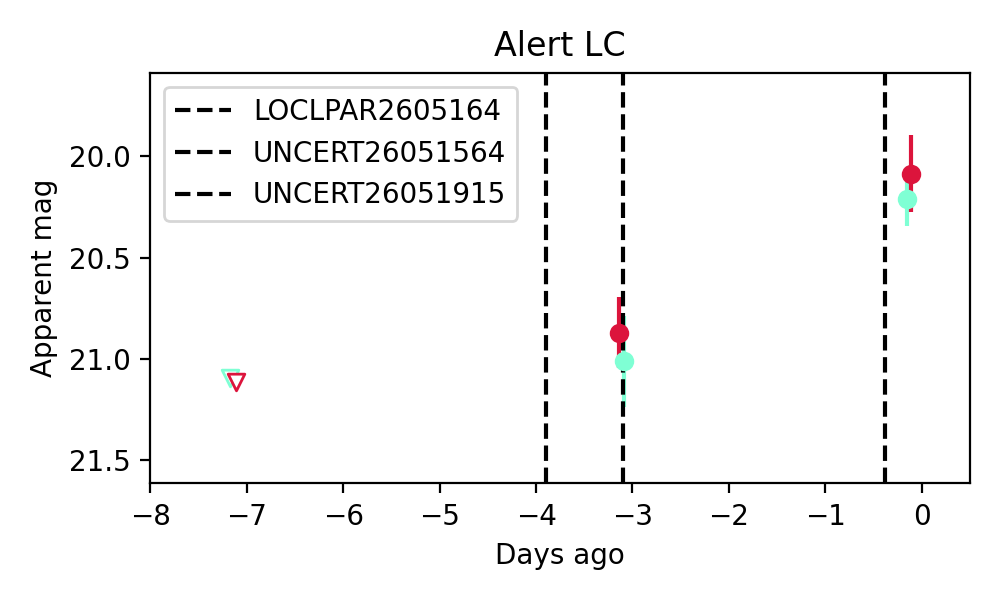
Consistent with synchrotron, g-r>0!
12. ZTF26aaxjlns (FBOT?) [Back to Top] [Share] [Trigger Swift] [Fritz ] [Lasair ]RA, Dec: 158.352, 8.03765 10h33m24.48s, 8d 2m15.52sGalactic (l, b): 236.75022, 52.18079 WARNING: -0.97 deg from ecliptic plane ext(g-r) = 0.027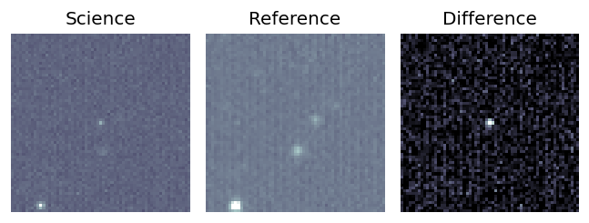
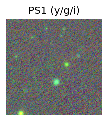
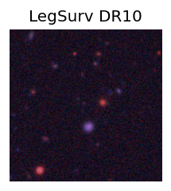
peak abs mag = -23.37 LegacySurvey: 1 sources in 3 arcsec Closest: d = 1.16 arcsec, 41.5 deg (east of north) photoz=1.1 (68% bounds 0.95, 1.31), type=PSF peak abs mag = -25.3 (68% bounds -24.91, -25.76) 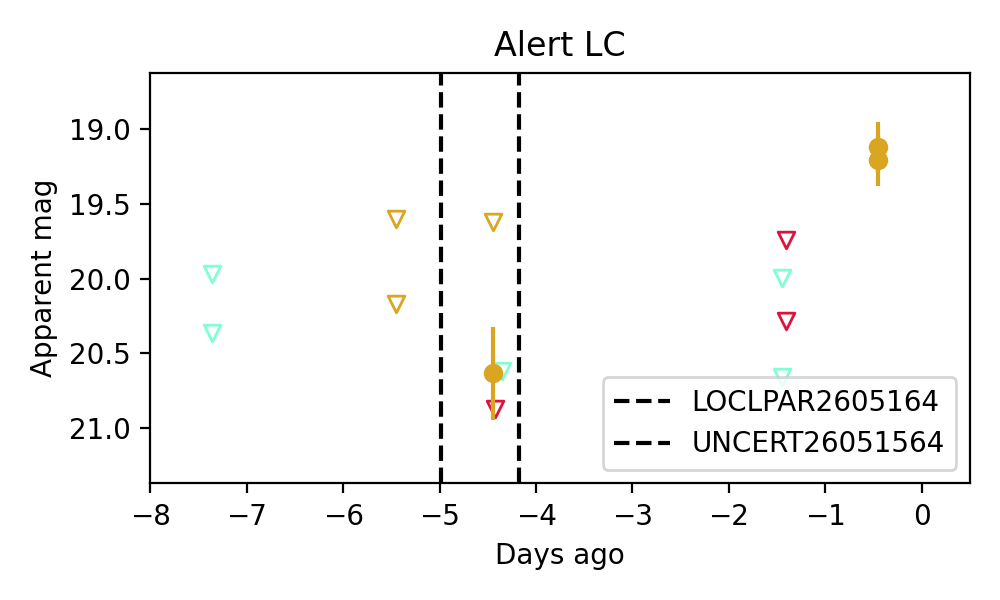
13. ZTF26aaxjonu (FBOT?) [Back to Top] [Share] [Trigger Swift] [Fritz ] [Lasair ]RA, Dec: 155.9085, 15.25657 10h23m38.04s, 15d15m23.65sGalactic (l, b): 224.3724, 53.7221 WARNING: 4.86 deg from ecliptic plane ext(g-r) = 0.058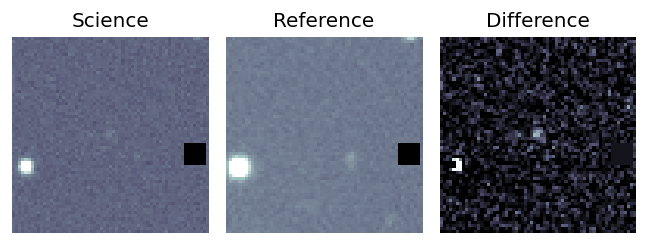
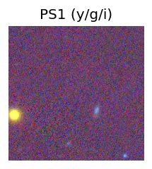
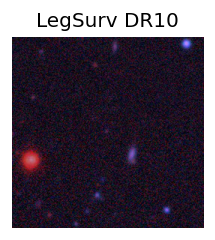
LegacySurvey: 1 sources in 3 arcsec Closest: d = 0.61 arcsec, 64.7 deg (east of north) photoz=0.64 (68% bounds 0.47, 0.88), type=PSF peak abs mag = -23.4 (68% bounds -22.56, -24.24) 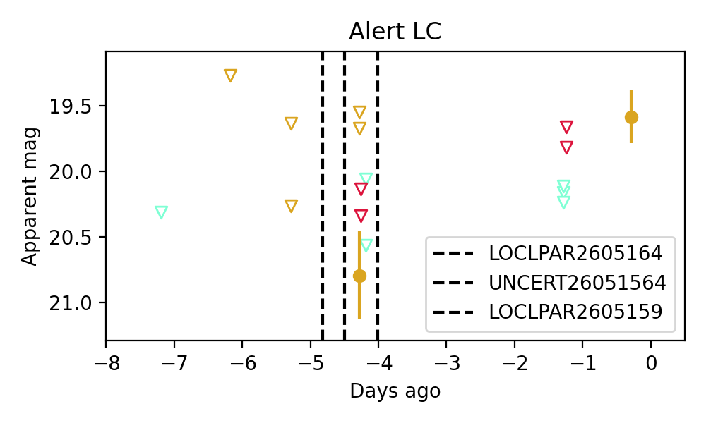
14. ZTF26aaxkqxb (FBOT?) [Back to Top] [Share] [Trigger Swift] [Fritz ] [Lasair ]RA, Dec: 205.70263, 11.4118 13h42m48.63s, 11d24m42.48sGalactic (l, b): 342.92916, 70.18443 ext(g-r) = 0.037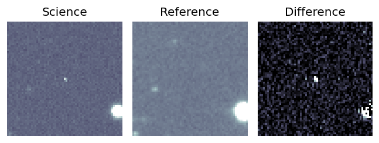
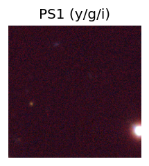
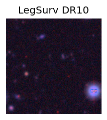
peak abs mag = -22.77 LegacySurvey: 1 sources in 3 arcsec Closest: d = 0.50 arcsec, 117.2 deg (east of north) photoz=0.48 (68% bounds 0.19, 1.29), type=PSF peak abs mag = -23.13 (68% bounds -20.8, -25.77) 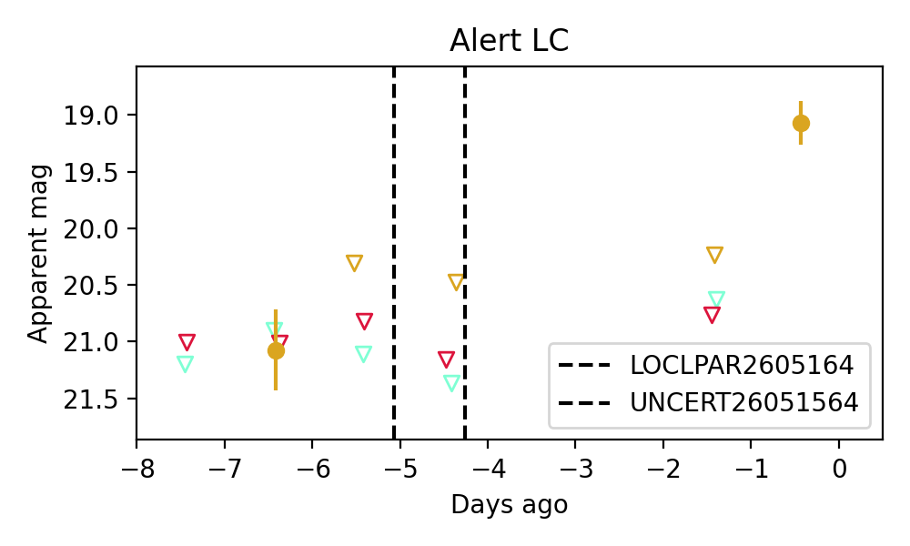
15. ZTF26aaxkwae (FBOT?) [Back to Top] [Share] [Trigger Swift] [Fritz ] [Lasair ]RA, Dec: 246.02495, 1.58828 16h24m5.99s, 1d35m17.79sGalactic (l, b): 15.67108, 33.09212 ext(g-r) = 0.074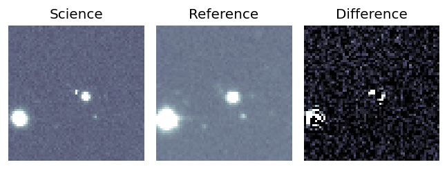
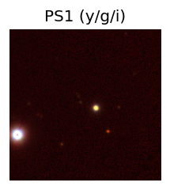
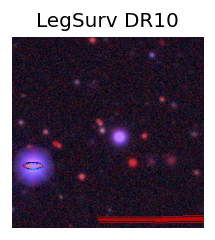
LegacySurvey: 1 sources in 3 arcsec Closest: d = 2.07 arcsec, 75.0 deg (east of north) photoz=0.27 (68% bounds 0.06, 1.64), type=PSF peak abs mag = -22.7 (68% bounds -19.11, -27.38) 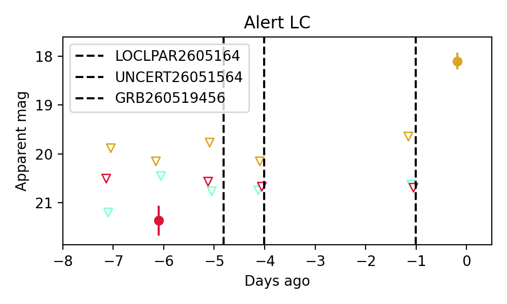
16. ZTF26aaxlxij (FBOT?) [Back to Top] [Share] [Trigger Swift] [Fritz ] [Lasair ]RA, Dec: 224.99302, 47.92243 14h59m58.33s, 47d55m20.76sGalactic (l, b): 81.35688, 57.51132 ext(g-r) = 0.03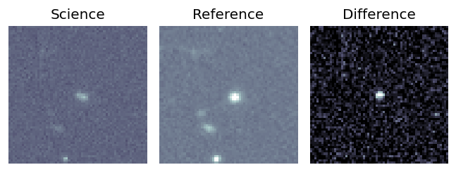
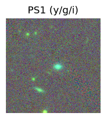
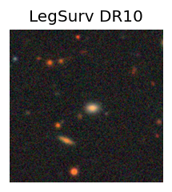
peak abs mag = -19.83 PS1: 1 source in 3 arcsec Closest: d = 2.95 arcsec photoz=0.20+/-0.08 peak abs mag = -20.18 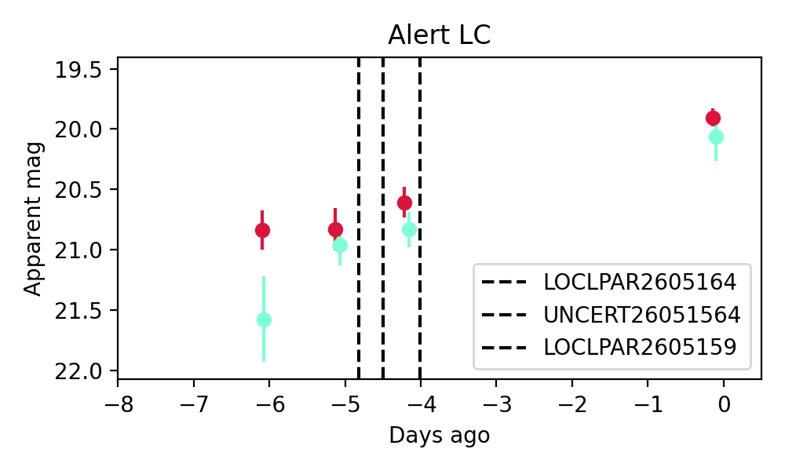
Consistent with synchrotron, g-r>0!
17. ZTF26aaxlylk (FBOT?) [Back to Top] [Share] [Trigger Swift] [Fritz ] [Lasair ]RA, Dec: 240.45383, 57.30363 16h 1m48.92s, 57d18m13.06sGalactic (l, b): 88.54673, 45.06784 ext(g-r) = 0.03peak abs mag = -20.69 PS1: 1 source in 3 arcsec Closest: d = 9.58 arcsec photoz=0.44+/-0.22 peak abs mag = -21.69 Consistent with synchrotron, g-r>0!
18. ZTF26aaxmngs (FBOT?) [Back to Top] [Share] [Trigger Swift] [Fritz ] [Lasair ]RA, Dec: 228.41988, -17.51207 15h13m40.77s, -17d-30m-43.46sGalactic (l, b): 344.67413, 33.58986 WARNING: 0.44 deg from ecliptic plane ext(g-r) = 0.102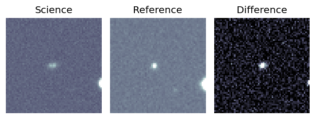
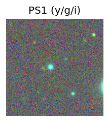
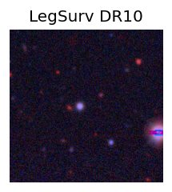
LegacySurvey: 1 sources in 3 arcsec Closest: d = 2.90 arcsec, 95.6 deg (east of north) photoz=0.11 (68% bounds 0.03, 0.4), type=PSF peak abs mag = -20.08 (68% bounds -17.19, -23.13)
19. ZTF26aaxmnni (FBOT?) [Back to Top] [Share] [Trigger Swift] [Fritz ] [Lasair ]RA, Dec: 228.28219, -17.73655 15h13m7.73s, -17d-44m-11.59sGalactic (l, b): 344.38362, 33.49507 WARNING: 0.19 deg from ecliptic plane ext(g-r) = 0.105LegacySurvey: 1 sources in 3 arcsec Closest: d = 6.30 arcsec, 267.6 deg (east of north) photoz=0.03 (68% bounds 0.01, 0.44), type=PSF peak abs mag = -19.71 (68% bounds -17.21, -25.75)
20. ZTF26aaxmtds (FBOT?) [Back to Top] [Share] [Trigger Swift] [Fritz ] [Lasair ]RA, Dec: 271.34443, 23.1656 18h 5m22.66s, 23d 9m56.17sGalactic (l, b): 49.40718, 20.04261 ext(g-r) = 0.117LegacySurvey: 1 sources in 3 arcsec Closest: d = 0.73 arcsec, 122.1 deg (east of north) photoz=0.56 (68% bounds 0.31, 0.85), type=REX peak abs mag = -22.5 (68% bounds -21.01, -23.6) Consistent with synchrotron, g-r>0!
21. ZTF26aaxngcq (FBOT?) [Back to Top] [Share] [Trigger Swift] [Fritz ] [Lasair ]RA, Dec: 292.98071, 59.74565 19h31m55.37s, 59d44m44.33sGalactic (l, b): 91.4239, 18.3655 ext(g-r) = 0.077PS1: 1 source in 3 arcsec Closest: d = 0.45 arcsec photoz=0.33+/-0.34 peak abs mag = -21.24
22. ZTF26aaxnkxg (FBOT?) [Back to Top] [Share] [Trigger Swift] [Fritz ] [Lasair ]RA, Dec: 323.31601, 3.1136 21h33m15.84s, 3d 6m48.95sGalactic (l, b): 57.27743, -33.49525 ext(g-r) = 0.056peak abs mag = -18.59 LegacySurvey: 1 sources in 3 arcsec Closest: d = 1.21 arcsec, 270.2 deg (east of north) photoz=0.47 (68% bounds 0.28, 0.9), type=EXP peak abs mag = -22.67 (68% bounds -21.35, -24.36) Consistent with synchrotron, g-r>0!
23. ZTF26aaxnlfv (FBOT?) [Back to Top] [Share] [Trigger Swift] [Fritz ] [Lasair ]RA, Dec: 310.26174, 5.63035 20h41m2.82s, 5d37m49.24sGalactic (l, b): 51.46366, -21.27784 ext(g-r) = 0.11LegacySurvey: 1 sources in 3 arcsec Closest: d = 0.02 arcsec, 215.1 deg (east of north) photoz=0.12 (68% bounds 0.07, 0.34), type=SER peak abs mag = -20.29 (68% bounds -18.91, -22.79)
24. ZTF26aaxnlmg (FBOT?) [Back to Top] [Share] [Trigger Swift] [Fritz ] [Lasair ]RA, Dec: 287.99664, -5.99152 19h11m59.19s, -5d-59m-29.48sGalactic (l, b): 29.91, -7.28764 ext(g-r) = 0.584PS1: 1 source in 3 arcsec Closest: d = 0.76 arcsec photoz=0.25+/-0.04 peak abs mag = -21.87
25. ZTF26aaxnlsc (FBOT?) [Back to Top] [Share] [Trigger Swift] [Fritz ] [Lasair ]RA, Dec: 280.44572, -17.13594 18h41m46.97s, -17d-8m-9.39sGalactic (l, b): 16.55534, -5.65467 ext(g-r) = 0.402PS1: 1 source in 3 arcsec Closest: d = 1.17 arcsec photoz=0.31+/-0.01 peak abs mag = -23.41 Consistent with synchrotron, g-r>0!
26. ZTF26aaxobmg (Afterglow?) [Back to Top] [Share] [Trigger Swift] [Fritz ] [Lasair ]RA, Dec: 301.44603, 11.40901 20h 5m47.05s, 11d24m32.45sGalactic (l, b): 51.85456, -10.82838 ext(g-r) = 0.142